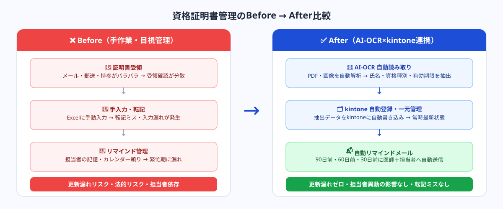
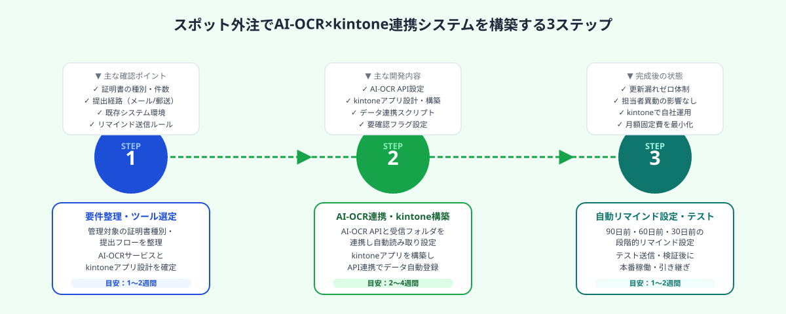

医療機関の契約医師資格管理でよくある課題
遠隔画像診断事業者・複数診療科を持つ病院・クリニックグループなど、多数の契約医師と業務委託契約を結ぶ医療機関では、資格証明書管理が属人的なオペレーションになりがちです。
具体的には次のような状況が典型的な課題として挙げられます。
- 管理対象が多い：契約医師が50〜300名規模になると、資格種別（専門医・認定医・指導医等）×有効期限の組み合わせが数百件単位になる
- 証明書の種別が多岐にわたる：賠償責任保険（年1回更新）・専門医資格（5年に1回更新）・診断書作成認定など、更新頻度・更新手続きが資格ごとに異なる
- 提出手段がバラバラ：医師からの証明書提出がメール添付・郵送・持参など統一されておらず、受領確認が複数担当者に分散する
- 有効期限の把握が手作業：ExcelやスプレッドシートにPDFを目視確認しながら手入力するため、転記ミス・入力漏れが発生しやすい
- リマインドが属人的：担当者が記憶やカレンダーに頼ってリマインドするため、担当者異動や繁忙期に抜けが生じる
こうした問題は少人数の事務担当者が多数の医師を管理する組織で特に顕著になります。更新漏れが発生すると、保険加入要件を満たさないまま業務を継続するリスクや、資格の空白期間に行われた診断の法的有効性への影響が生じます。
AI化で解決できる3つのポイント
AI-OCR×kintone連携によるシステム化は、上記の課題を3つの方向で解決します。
① 証明書の読み取り・データ化を自動化する
医師から提出されたPDFや画像ファイルをAI-OCRが自動解析し、氏名・資格種別・資格番号・有効期限などの必須項目を抽出します。手入力・転記が不要になるため、転記ミスが構造的に発生しない仕組みになります。
② kintoneに集約して常時最新状態を維持する
抽出データをkintoneの契約医師管理アプリに自動登録し、元のPDFも紐付けて保存します。医師ごと・資格種別ごと・有効期限順に一覧表示でき、担当者が変わっても引き継ぎなしで管理状況を把握できます。
③ 期限アラートを段階的に自動送信する
有効期限の90日前・60日前・30日前に、医師本人と担当者の両方にリマインドメールを自動送信します。文面を段階ごとに変えることも可能（例：90日前は案内メール・30日前は警告メール）で、人的チェックに頼らない更新管理体制を実現します。

AI-OCR×kintone連携の3ステップ実装
ステップ1｜AI-OCRで資格証明書・保険証書を自動読み取りする
医師から提出された証明書（PDF・JPG・PNG等）を受信するメールボックスまたは共有フォルダを起点として、AI-OCRが自動的にファイルを検出・解析します。
AI-OCRが抽出する主な項目
- 氏名（医師氏名）
- 資格種別（専門医・指導医・賠償責任保険等）
- 資格番号・証書番号
- 有効期限（開始日・終了日）
- 発行機関名
現在のAI-OCRツールは、書式が異なる証明書でも高精度で情報抽出できます。ただし、手書き文字の多い古い証明書や、読み取り精度が低い場合は人間のダブルチェックフローを組み込むことを推奨します。例えば「信頼度スコアが閾値未満の場合はkintone上で要確認フラグを立てる」仕組みにすれば、完全自動化と品質担保を両立できます。
よく使われるAI-OCRサービスの選択肢としては、以下が挙げられます。
- AI inside（DX Suite）：日本語帳票に強く、kintoneとの連携実績が豊富
- FlexiCapture（ABBYY）：多様なフォーマット対応・高精度
- Azure Form Recognizer / Google Document AI：クラウドAPIとして利用でき、開発コストを抑えられる
- ChatGPT（GPT-4o Vision）：プロンプト設計によって証明書の構造解析も可能。低コストで試験導入しやすい
どのツールを選ぶかは、証明書の種別・量・既存のシステム環境によって変わります。スポット外注先のエンジニアと要件整理をしてから選定するのが現実的です。
ステップ2｜kintoneに自動登録し一元管理する
AI-OCRで抽出したデータをkintoneの「契約医師管理アプリ」に自動登録します。kintone APIまたはWebhook連携を使えば、OCR完了後に即座にkintoneへのデータ書き込みが行われます。
kintoneアプリで管理するフィールド設計の例
【資格・保険台帳】資格種別 / 証書番号 / 有効期限 / 提出日 / 添付PDF / 確認ステータス / 要確認フラグ
kintoneの標準機能でフィルタリング（有効期限が90日以内のレコードだけ表示する等）も可能なため、担当者はダッシュボードを確認するだけで全医師の証明書ステータスを一目で把握できます。
また、kintoneはノーコードでアプリ設計ができるため、新たな資格種別が追加になった場合でも、フィールド追加をシステム改修なしで自社対応できる点が長期運用のメリットです。
ステップ3｜期限アラートメールを自動送信する
kintoneのワークフロー機能（またはkroutine等のkintone連携ツール・API）を使い、有効期限フィールドを参照して段階的なリマインドメールを自動送信します。

リマインドメールの設計例
- 90日前：「〇〇先生の△△資格（証書番号：◇◇）の有効期限が90日後に到来します。更新手続きをご確認ください。」（案内・確認促進）
- 60日前：「△△資格の有効期限まで60日です。更新証明書の準備・ご提出をお願いします。」（行動促進）
- 30日前：「【重要】△△資格の有効期限まで30日です。証明書のご提出がまだの場合は至急ご対応ください。」（緊急案内）
- 期限当日・超過：担当者にアラート通知（業務停止リスクへの対処）
文面はkintone側のテンプレートとして管理することで、担当者が自社でカスタマイズできます。送信先は医師本人・担当事務・部門責任者の複数設定が可能です。
このステップ3まで実装することで、担当者がシステムを開かなくても、期限が近づいた医師にだけ自動でリマインドが届く体制が完成します。
スポット外注で実現するメリットと費用感
このシステムの構築は、kintone・AI-OCR・API連携の知識を持つエンジニアがいれば、設計から稼働まで約4〜8週間で完了します。ただし多くの医療機関では、こうした開発知識を持つ情報システム担当者が社内にいないケースが大半です。
スポット外注が適している理由
- 「一度作れば長期稼働できる」単発の開発タスクであるため、月額の保守契約は必要ない
- kintoneはノーコードで運用できるため、構築後の日常運用は自社で完結できる
- AI-OCRのAPIは月額従量課金型が多く、大きな固定費が発生しない
- 既存のExcel管理から移行するデータ整形も、スポット作業として依頼できる
費用の目安
開発期間の目安：4〜8週間（要件定義〜テスト運用まで）
※月額のkintoneライセンス・AI-OCR API利用料は別途
社内エンジニアを採用するコスト（年収600万円以上＋採用費）や、SIerへの常駐型開発依頼（数百万円規模）と比べると、スポット外注は圧倒的に低コストです。また、要件が固まっていない段階でも相談ベースで進められるため、「何から始めればよいか分からない」状態からでも着手できます。
よくある質問
- Q. kintoneを使っていない場合でもシステム化できますか？
- A. 可能です。kintone以外にもNotionやAirtable、Excelベースの管理システムへのAI-OCR連携も対応できます。ただし、kintoneはノーコードで柔軟に運用できるため、新規導入も含めた検討を推奨します。
- Q. AI-OCRの読み取り精度が低い場合はどうなりますか？
- A. 信頼度スコアが閾値以下のレコードに「要確認フラグ」を自動付与し、担当者が手動で確認するフローを組み込みます。完全自動化と品質担保を両立できる設計にします。
- Q. 個人情報（医師の資格情報）のセキュリティは大丈夫ですか？
- A. kintoneはISO 27001認証取得済みで、アクセス権限管理・通信暗号化に対応しています。AI-OCRのAPIもデータ非保存設定が可能なものを選定します。スポット外注先とNDAを締結した上で開発を進めます。
まとめ
医療機関の契約医師・資格証明書管理をAI化するポイントは3つです。①AI-OCRで証明書を自動読み取りして転記ミスをゼロにする、②kintoneに自動登録して全員の証明書ステータスを一元管理する、③期限90日前から段階的なリマインドメールを自動送信して更新漏れをゼロにする。
システムの構築はkintone・AI-OCR・API連携の知識を持つエンジニアへのスポット外注で4〜8週間・30〜80万円程度から実現できます。構築後の日常運用はkintoneのノーコード機能で自社対応でき、月額の大きな固定費も発生しません。担当者の異動があっても引き継ぎゼロで管理を継続できる体制が整います。